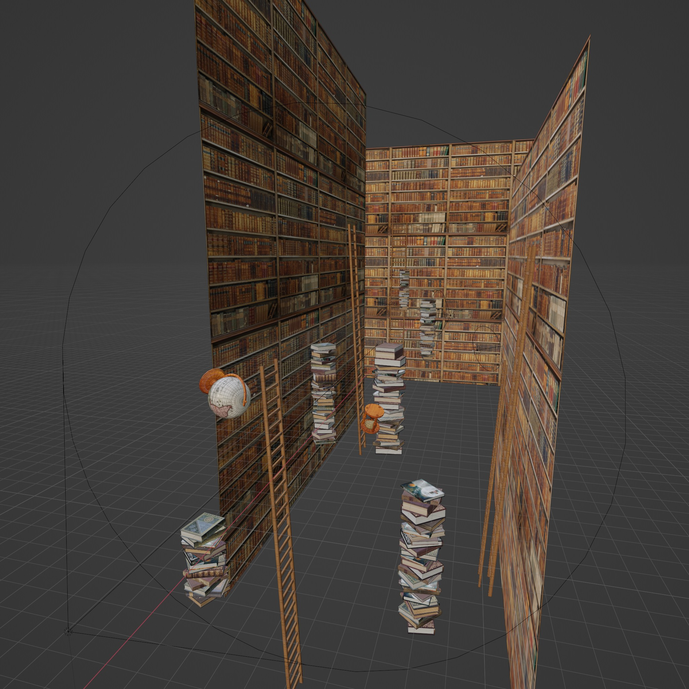
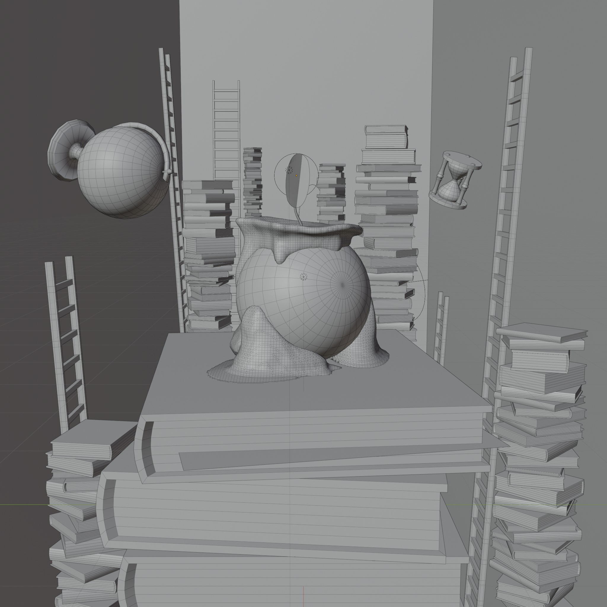

I created this within university project. At first stage i found an interesting references on Pinterest with "Candle eye". Later, i had create an sketch of the scene and recreate that in blender. I decided to animate this and after 8-hour rendering it finally here. It was interesting experience with texturing books and creating a realistic light. Also, i learned about geometry nodes and some "randomization" available in program.